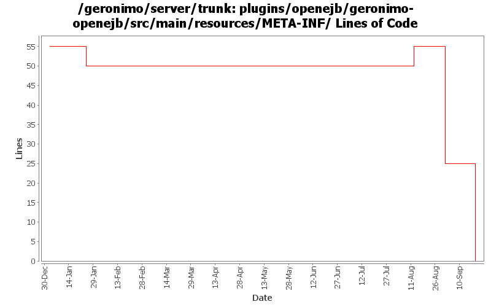

[root]/plugins/openejb/geronimo-openejb/src/main/resources/META-INF
 services
(1 files, 22 lines)
services
(1 files, 22 lines)

| Author | Changes | Lines of Code | Lines per Change |
|---|---|---|---|
| Totals | 9 (100.0%) | 38 (100.0%) | 4.2 |
| djencks | 2 (22.2%) | 25 (65.8%) | 12.5 |
| gawor | 6 (66.7%) | 12 (31.6%) | 2.0 |
| jbohn | 1 (11.1%) | 1 (2.6%) | 1.0 |
no longer used
0 lines of code changed in 1 file:
GERONIMO-4239, sort of. Use transitive depenedencies in c-m-p everywhere. This may break stuff.... let me know
25 lines of code changed in 1 file:
openejb needs another dependency
5 lines of code changed in 1 file:
update xbean version to match the version used by latest openejb snapshot
1 lines of code changed in 1 file:
less maintainace headaches
6 lines of code changed in 1 file:
GERONIMO-3796 Upgrade to 3.3 version of xbean-finder, xbean-naming, and xbean-reflect
1 lines of code changed in 1 file:
commons-dbcp no longer needed by openejb
0 lines of code changed in 1 file:
openejb now requires 3.3-SNAPSHOT version of xbean-reflect
0 lines of code changed in 2 files: